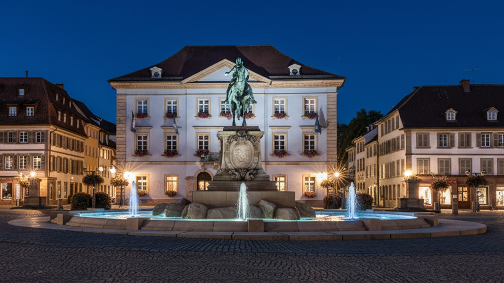
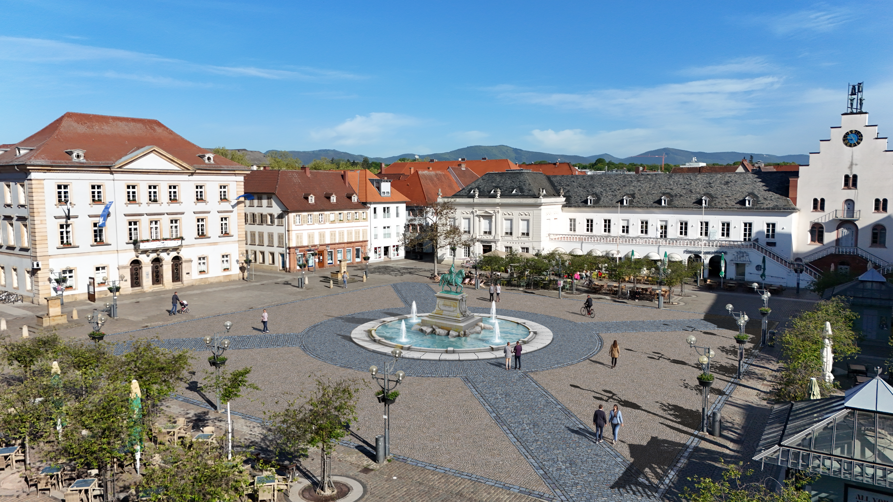
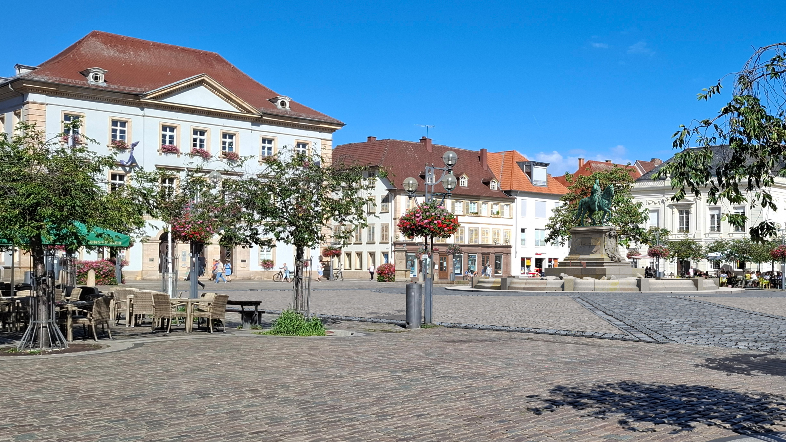
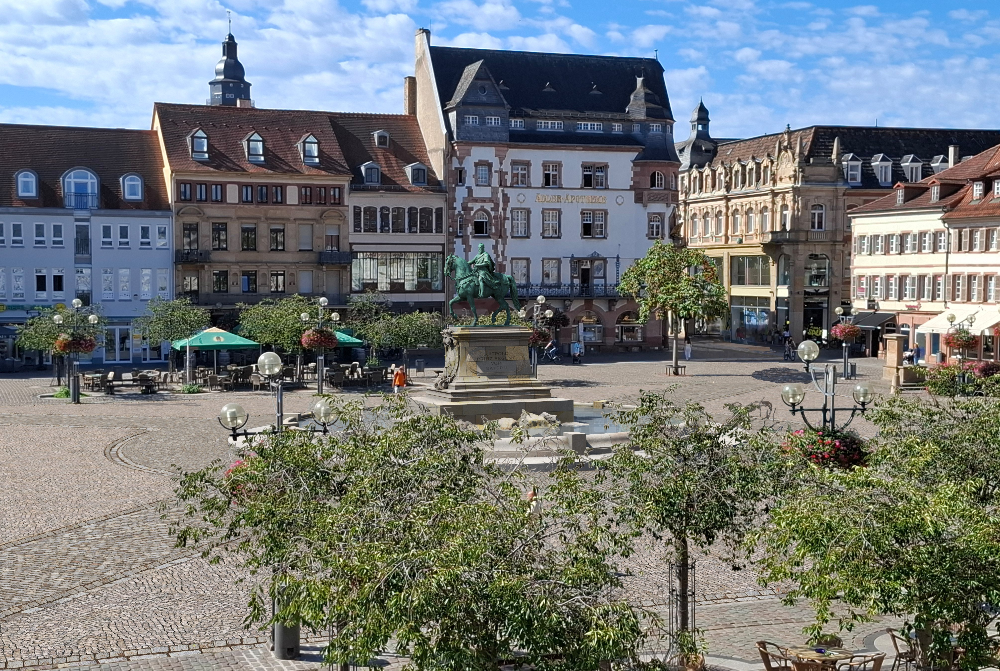
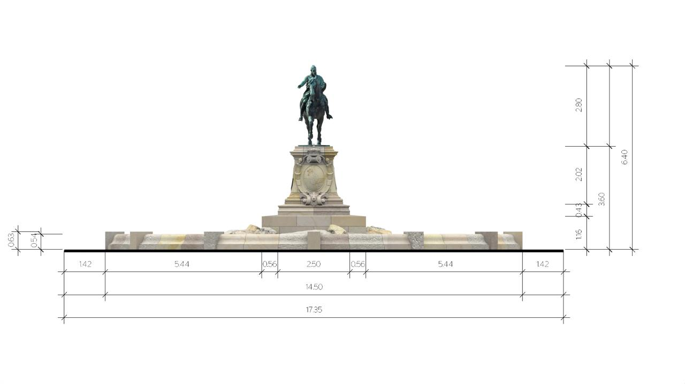
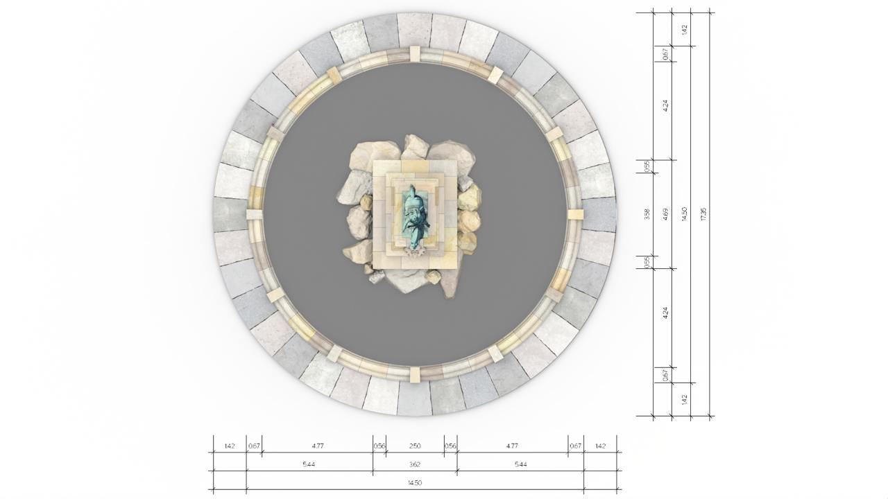

Stadtbild Deutschland e.V. · Regionalverband Südpfalz
Ja, zum
Luitpoldbrunnen.
Die Bürgerinitiative setzt sich für die Neugestaltung des Rathausplatzes in Landau mit dem Luitpoldbrunnen ein. Der historische Entwurf Friedrich von Thierschs soll wieder erlebbar werden.
Rathausplatz · 76829 Landau

Das fehlende Herzstück der Landauer Lebensqualität.
Die Initiative wirbt dafür, den historischen Entwurf des Architekten Friedrich von Thiersch am Rathausplatz wieder erlebbar zu machen. Der Brunnen soll Mittelpunkt der Platzgestaltung und ein neuer öffentlicher Treffpunkt werden.
Als Gründe nennt die Initiative Stadtklima, Geschichte und Kunst, Begegnungen, Tourismus sowie die Stärkung des innerstädtischen Einzelhandels und der Gastronomie.
Ansichten und Entwurfsunterlagen ansehenStadtklima
Ein kühlender Treffpunkt an immer heißeren Sommertagen.
Geschichte & Kunst
Der historische Entwurf Friedrich von Thierschs soll wieder erlebbar werden.
Begegnung
Ein öffentlicher Mittelpunkt für mehr soziale Begegnungen im Stadtraum.
Der Entwurf im Stadtraum.
Platzansichten, Gestaltungsvisualisierungen und Maßzeichnungen aus den Unterlagen der Initiative.






Ansichten des Brunnens




3D-Visualisierungen: Andre Gansel. Die dargestellten Brunnenansichten sind Visualisierungen des Entwurfs.
Landau sprudelt.
Machen Sie mit.
Der Spendenflyer der Initiative bittet um Unterstützung für das Projekt Luitpoldbrunnen Landau.
SpendeninformationenLUITPOLDBRUNNEN
RATHAUSPLATZ · LANDAU
Ja, zum Brunnen.
Spenden Sie mit.
Die Flyer bitten um Spenden zugunsten von Stadtbild Deutschland e.V. Bitte als Verwendungszweck „Luitpoldbrunnen Landau“ angeben.
Spendenflyer mit QR-Code- Empfänger
- Stadtbild Deutschland e.V.
- IBAN
- DE94 2415 0001 0025 0445 46
- Verwendungszweck
- „Luitpoldbrunnen Landau“
Wir hören zu.
Schreiben Sie uns direkt oder nutzen Sie das Formular. Es öffnet eine voradressierte E-Mail in Ihrem E-Mail-Programm.
Bürgerinitiative Luitpoldbrunnen
Stadtbild Deutschland e.V. · Regionalverband Südpfalz
suedpfalz@stadtbild-deutschland.org
Vogesenstr. 110
76829 Landau